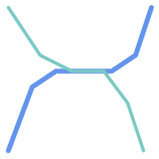
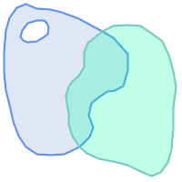

Name
ST_Overlaps — 二つのジオメトリが同じ次元を持ち、インタセクトして、かつ相手と重ならない点少なくとも一つあるかをテストします。
Synopsis
boolean ST_Overlaps(geometry A, geometry B);
説明
ジオメトリAとBが「空間的にオーバラップする」場合にTRUEを返します。ジオメトリが同じ次元で、内部のインタセクションも同じ次元で、少なくとも一つの点がもう一方の外側にある (一方がもう一方を覆っている状態でないのと等価です)と、二つのジオメトリがオーバラップしていると言います。オーバラップの関係は、対称性があり、無反射性があります。
数学用語では: ST_Overlaps(A, B) ⇔ ( dim(A) = dim(B) = dim( Int(A) ⋂ Int(B) )) ∧ (A ⋂ B ≠ A) ∧ (A ⋂ B ≠ B)
![[Note]](../images/note.png) | |
この関数の呼び出しによって、ジオメトリで使用可能なインデックスを使用するバウンディングボックスの比較が自動的に行われます。 インデックスの使用を避けるには |
GEOSモジュールで実現しています。
![[Important]](../images/important.png) | |
Enhanced: 3.0.0 |
ご注意: これは論理値を返して整数を返さないのが「許される」版です。
 このメソッドはOGC Simple Features Implementation Specification for SQL 1.1の実装です。
このメソッドはOGC Simple Features Implementation Specification for SQL 1.1の実装です。
s2.1.1.2 // s2.1.13.3
このメソッドはSQL/MM仕様の実装です。
SQL-MM 3: 5.1.32
例
次に示す図全てで、ST_OverlapsはTRUEを返します。

| 
| 
|
ラインストリング上のポイントが含まますが、次元が低いのでオーバラップにもクロスにもなりません。
SELECT ST_Overlaps(a,b) AS overlaps, ST_Crosses(a,b) AS crosses,
ST_Intersects(a, b) AS intersects, ST_Contains(b,a) AS b_contains_a
FROM (SELECT ST_GeomFromText('POINT (100 100)') As a,
ST_GeomFromText('LINESTRING (30 50, 40 160, 160 40, 180 160)') AS b) AS t
overlaps | crosses | intersects | b_contains_a
---------+----------------------+--------------
f | f | t | t
部分的にポリゴンを覆うラインストリングはインタセクトもクロスもしますが、異なり次元なのでオーバラップしません。
SELECT ST_Overlaps(a,b) AS overlaps, ST_Crosses(a,b) AS crosses,
ST_Intersects(a, b) AS intersects, ST_Contains(a,b) AS contains
FROM (SELECT ST_GeomFromText('POLYGON ((40 170, 90 30, 180 100, 40 170))') AS a,
ST_GeomFromText('LINESTRING(10 10, 190 190)') AS b) AS t;
overlap | crosses | intersects | contains
---------+---------+------------+--------------
f | t | t | f
二つのポリゴンがインタセクトするものの一方が他方のオーバラップを含んでいませんが、インタセクトが同じ次元なのでクロスしません。
SELECT ST_Overlaps(a,b) AS overlaps, ST_Crosses(a,b) AS crosses,
ST_Intersects(a, b) AS intersects, ST_Contains(b, a) AS b_contains_a,
ST_Dimension(a) AS dim_a, ST_Dimension(b) AS dim_b,
ST_Dimension(ST_Intersection(a,b)) AS dim_int
FROM (SELECT ST_GeomFromText('POLYGON ((40 170, 90 30, 180 100, 40 170))') AS a,
ST_GeomFromText('POLYGON ((110 180, 20 60, 130 90, 110 180))') AS b) As t;
overlaps | crosses | intersects | b_contains_a | dim_a | dim_b | dim_int
----------+---------+------------+--------------+-------+-------+-----------
t | f | t | f | 2 | 2 | 2